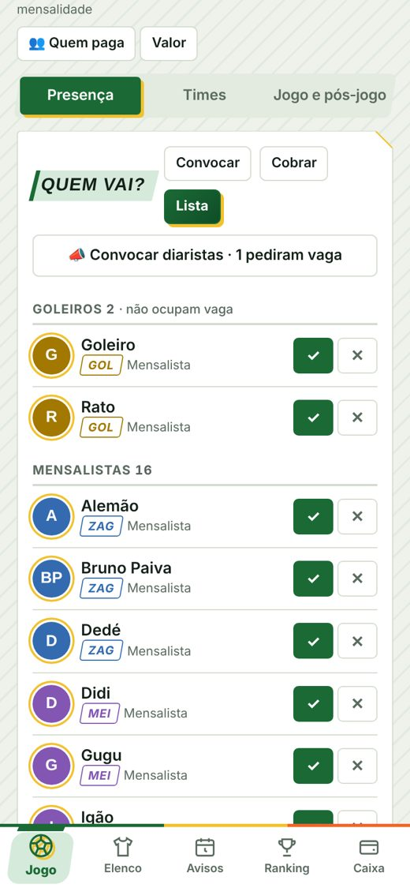
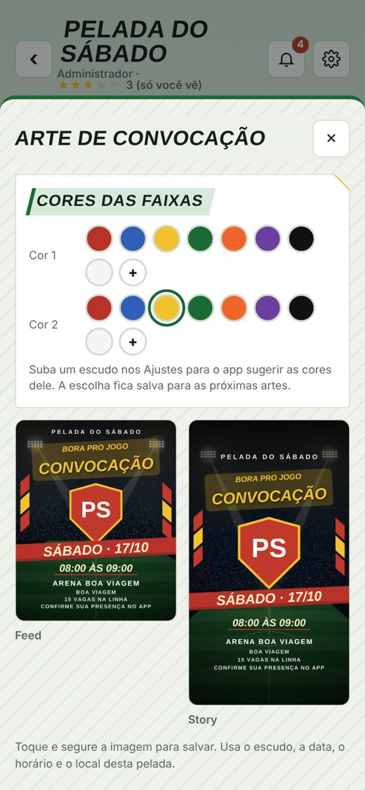
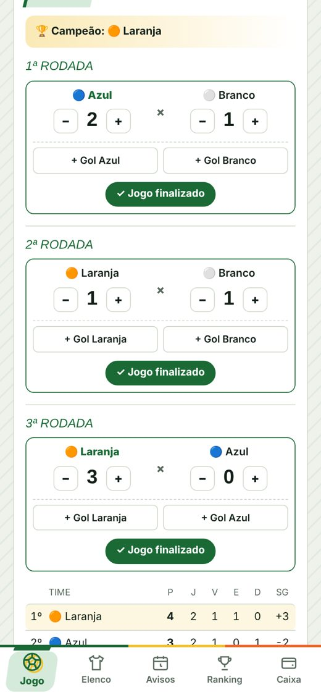
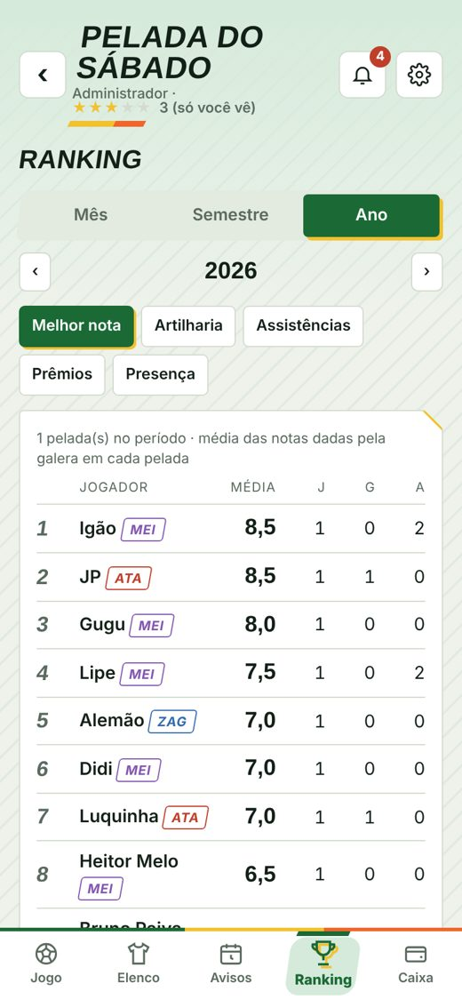
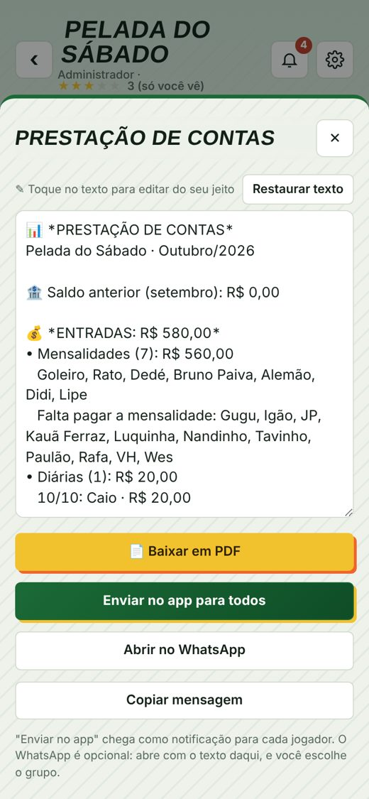
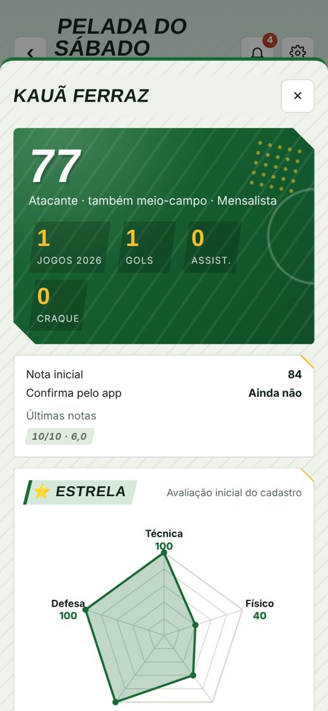
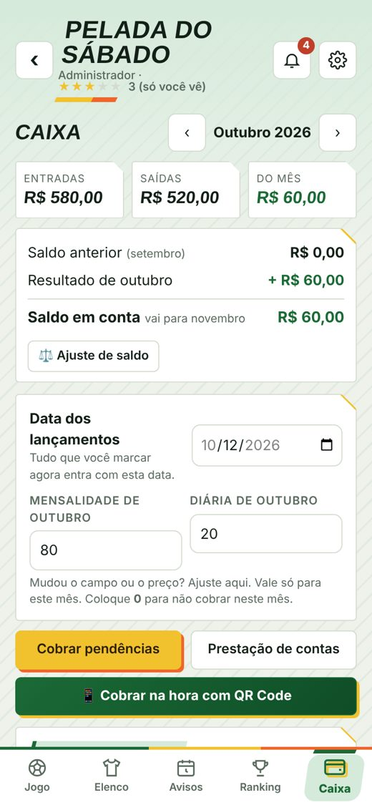

Sua peladaorganizada.
Quem vai, times equilibrados, placar, notas da galera e o caixa com Pix. Tudo o que hoje fica espalhado no grupo do WhatsApp, num app só.
Funciona no iPhone e no Android. Grátis para começar.
Chega de caderninho e de "quem vai?" no grupo.
Toda pelada tem as mesmas três dores de cabeça. O Pelada FC resolve as três sem ninguém precisar mudar o jeito de jogar.
Cada um confirma com um toque. Mensalistas têm vaga garantida e diaristas entram na fila por ordem de pedido.
O sorteio equilibra pela nota de cada jogador e pela posição. A média de cada time aparece para todo mundo ver.
O jogador paga por Pix dentro do app e o pagamento já aparece como pago. No fim do mês sai a prestação de contas.
Uma semana de pelada
Do aviso de segunda até a prestação de contas no fim do mês, é assim que o app acompanha o seu grupo.
-
Segunda
A pelada é marcada
O administrador marca o jogo com data, horário e local. A galera recebe a notificação no celular na mesma hora.
-
Terça a quinta
A galera confirma
Mensalistas confirmam com um toque. Diaristas pedem vaga e entram na fila, e todo mundo vê quem vai.

-
Sexta
Fecha a lista
Acabou o prazo, o administrador convoca os diaristas que quiser. Quem foi chamado paga a diária por Pix e garante a vaga. Sai até arte de convocação para o grupo.

-
Sábado, antes do jogo
Times sorteados
O sorteio monta times equilibrados por nota e posição. Prefere montar na mão? Toque no time e escolha os jogadores.
-
Sábado, no campo
Bola rolando
Placar, gols e assistências marcados na hora. Dá para fazer quem ganha fica, pontos corridos ou mata-mata, e a tabela se atualiza sozinha.

-
Depois do jogo
Resenha garantida
Votação secreta da galera: notas, craque e pereba. Cada um ganha sua ficha de jogador e o ranking mostra quem está voando.

-
Fim do mês
Contas na mesa
Entradas e saídas de cada mês, saldo que passa para o mês seguinte e prestação de contas detalhada em PDF para o grupo.

Feito para quem organiza e para quem joga
Para quem organiza
Menos cobrança no grupo, mais tempo para jogar.
- Prazo de confirmação e fila de diaristas por ordem de pedido.
- Goleiros à parte, sem ocupar vaga de linha.
- Sorteio equilibrado ou times montados na mão, com a média de cada um.
- Campeonato com tabela, classificação e relatório em PDF.
- Caixa do grupo com mensalidades, diárias, descontos, despesas e ajuste de saldo.
- Pix dentro do app, que marca como pago sozinho.
- Mensagens prontas para convocar, cobrar e divulgar o resultado.
Para quem joga
Tudo o que você quer saber da pelada, no seu celular.
- Confirma presença com um toque e vê quem mais vai.
- Paga por Pix sem precisar pedir a chave para ninguém.
- Vota em segredo nas notas, no craque e no pereba.
- Ficha de jogador com nota, gols, assistências e evolução.
- Ranking do mês, do semestre e do ano.
- Notificações quando a pelada é marcada, quando você é convocado, quando os times saem e quando sai o resultado.
Por dentro do app


Instale em um minuto
Não precisa de loja. O Pelada FC abre pelo navegador e fica na tela inicial do celular, com ícone e notificações, igual a qualquer app.
iPhone
- Abra o Pelada FC no Safari.
- Toque no botão Compartilhar, o quadrado com a seta para cima.
- Escolha Adicionar à Tela de Início e toque em Adicionar.
Para receber notificações no iPhone, abra o app pelo ícone da tela inicial.
Android
- Abra o Pelada FC no Chrome.
- Toque nos três pontinhos no canto de cima.
- Escolha Instalar app ou Adicionar à tela inicial.
Pronto: o ícone do Pelada FC aparece junto com os seus outros apps.
Dúvidas
Quanto custa?
Para começar, é grátis. Quando o jogador paga por Pix dentro do app, existe a taxa do pagamento.
Todo mundo do grupo precisa instalar?
Quem instala aproveita tudo: confirmar presença, pagar por Pix, votar e receber notificações. O administrador também pode cadastrar e marcar jogadores que ainda não entraram no app.
Como o sorteio deixa os times equilibrados?
Cada jogador tem uma nota, que começa na avaliação do cadastro e vai mudando com as notas da galera depois de cada pelada. O sorteio usa essas notas e as posições para deixar os times com médias parecidas.
Serve para campeonato e evento?
Sim. Dá para criar eventos como aniversários, churrascos com jogo e torneios de fim de semana, com tabela de pontos corridos ou mata-mata e relatório em PDF.
O pagamento por Pix é seguro?
O Pix é processado pelo Mercado Pago. O app não guarda dados de banco nem senha de ninguém, só registra que o pagamento foi feito.
E os meus dados?
O app usa só o necessário para a pelada funcionar e segue a LGPD. Você pode apagar sua conta a qualquer momento em Meu perfil. Veja a Política de privacidade.
Vai ter na App Store e na Play Store?
Sim, está nos planos. Enquanto isso, é só instalar pelo navegador, como mostramos acima.